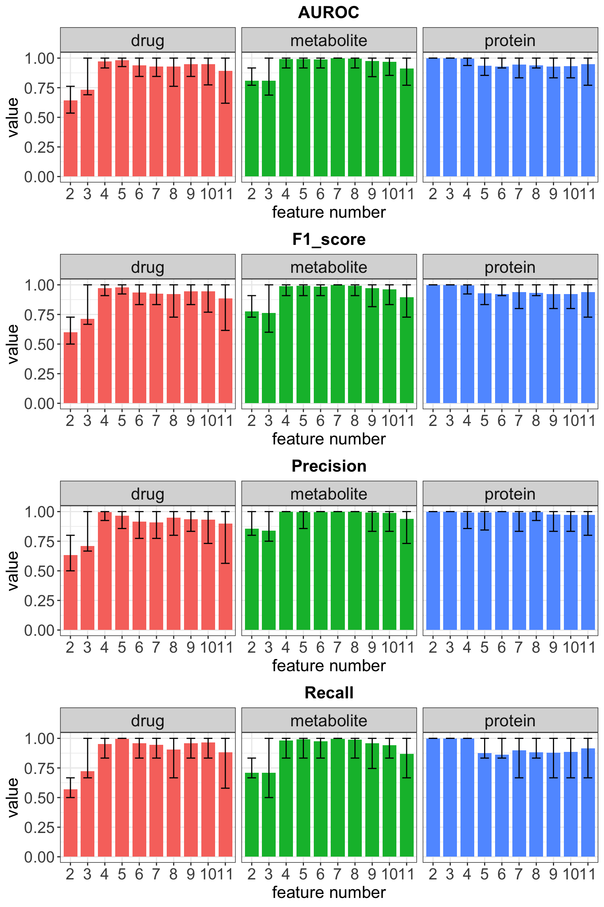

Last updated: 2024-05-31
Checks: 4 2
Knit directory: SMARTrial/analysis/
This reproducible R Markdown analysis was created with workflowr (version 1.7.0). The Checks tab describes the reproducibility checks that were applied when the results were created. The Past versions tab lists the development history.
Great job! The global environment was empty. Objects defined in the global environment can affect the analysis in your R Markdown file in unknown ways. For reproduciblity it’s best to always run the code in an empty environment.
The command set.seed(20220425) was run prior to running
the code in the R Markdown file. Setting a seed ensures that any results
that rely on randomness, e.g. subsampling or permutations, are
reproducible.
Great job! Recording the operating system, R version, and package versions is critical for reproducibility.
To ensure reproducibility of the results, delete the cache directory
featureSelection_cache and re-run the analysis. To have
workflowr automatically delete the cache directory prior to building the
file, set delete_cache = TRUE when running
wflow_build() or wflow_publish().
Great job! Using relative paths to the files within your workflowr project makes it easier to run your code on other machines.
Tracking code development and connecting the code version to the
results is critical for reproducibility. To start using Git, open the
Terminal and type git init in your project directory.
This project is not being versioned with Git. To obtain the full
reproducibility benefits of using workflowr, please see
?wflow_start.
Libraries
library(jyluMisc)
library(glmnet)
library(SummarizedExperiment)
library(cowplot)
library(tidyverse)
options(warn=-1)
set.seed(2019)
ggplot2::theme_set(theme_bw() + theme(axis.text = element_text(size=15), axis.title = element_text(size=16),
plot.title = element_text(size=16, hjust = 0.5, face = "bold"),
strip.text = element_text(size=16)))Load dataset
load("../output/protSmart_new.RData")
seProt <- protSmart_raw[,protSmart_raw$DISEASE %in% "AML"]Remove proteins with high missing rate (50%)
cut=0.5
seProt <- seProt[rowMeans(is.na(assay(seProt))) <= cut,]
dim(seProt)[1] 8400 21VSN
protMat <- vsn::justvsn(assay(seProt))
assay(seProt) <- protMatPrefilter by differential expression
load("../output/resTab_proteomic_AML_CD34enriched.RData")
resTab <- filter(resTab, pval <= 0.05)
seProt <- seProt[rownames(seProt) %in% resTab$name,]BPCA imputation
seProt.imp <- DEP::impute(seProt, "bpca")Dimensions
dim(seProt.imp)[1] 640 21Load dataset
load("../output/metaSmart.RData")
seMeta <- metaSmart[,metaSmart$DISEASE == "AML" ]BPCA imputation
seMeta.imp <- DEP::impute(seMeta, "bpca")Filter by differential abundance
load("../output/resTab_metabolomic_AML_all.RData")
resTab <- filter(resTab, pval <= 0.1)
seMeta.imp <- seMeta.imp[rownames(seMeta.imp) %in% resTab$name,]Dimensions
dim(seMeta.imp)[1] 32 21load("../output/seDrug.RData")
seDrug <- seDrug_auc[,seDrug_auc$patientID %in% seProt$SMART_ID]
colnames(seDrug) <- colnames(seProt[,match(colnames(seDrug), seProt$SMART_ID)])
#drugMat <- jyluMisc::mscale(drugMat)y <- colData(seProt)[["Resp_manual"]]
names(y) <- colnames(seProt)
y <- ifelse(!is.na(y), ifelse(y == "R", 0, 1),NA)
y <- y[!is.na(y)]allTrainData <- list(
protein = list(y = y, X = assay(seProt.imp)[,names(y)]),
metabolite = list(y = y, X = assay(seMeta.imp)[,names(y)]),
drug = list(y = y[intersect(names(y),colnames(seDrug))], X = assay(seDrug)[,intersect(names(y),colnames(seDrug))])
)Combined proteomic and metabolomic (not need to combine, protein will always be selected over metabolites)
#comMat <- rbind(assay(seProt.imp),assay(seMeta.imp))
#allTrainData[["prot_meta"]] <- list(y = y, X = comMat[,names(y)])source("../code/Random_lasso.R")set.seed(2024)
rndLassoRes <- list()
rndRes <- lapply(names(allTrainData), function(n) {
X <- scale(t(allTrainData[[n]]$X))
y <- allTrainData[[n]]$y
res <- featurePath(X, y, sampleFraction = 0.8, weakness =0.2, nPerm = 1000,
typePerm = "standard", lambda = seq(1,0.01,length.out = 100), family = "binomial")
tibble(feature = rownames(res$freqMat),
importance = rowMeans(res$freqMat),
set = n)
}) %>% bind_rows()
Warning: The above code chunk cached its results, but
it won’t be re-run if previous chunks it depends on are updated. If you
need to use caching, it is highly recommended to also set
knitr::opts_chunk$set(autodep = TRUE) at the top of the
file (in a chunk that is not cached). Alternatively, you can customize
the option dependson for each individual chunk that is
cached. Using either autodep or dependson will
remove this warning. See the
knitr cache options for more details.
pList <- lapply(unique(rndRes$set), function(s) {
eachTab <- filter(rndRes, set == s) %>%
arrange(desc(importance)) %>%
slice_head(n=30)
if (s == "protein") {
eachTab <- eachTab %>%
mutate(feature = rowData(seProt[feature,])$Genes)
}
eachTab <- mutate(eachTab, feature = factor(feature, levels = feature))
ggplot(eachTab, aes(x=feature, y=importance)) +
geom_bar(stat ="identity") +
ggtitle(s) +
theme_bw() +
theme(axis.text.x = element_text(angle = 90, hjust = 1, vjust = 0),
plot.title = element_text(face ="bold", size=10, hjust = 0.5))
})
cowplot::plot_grid(plotlist= pList, ncol=1)set.seed(2024)
featureNum <- list(protein = seq(2,11, 1),
metabolite = seq(2,11, 1),
drug = seq(2,11, 1))
allCompareRes <- lapply(unique(names(allTrainData)), function(n) {
X <- scale(t(allTrainData[[n]]$X))
y <- allTrainData[[n]]$y
lapply(featureNum[[n]], function(i) {
seleFeature <- filter(rndRes, set == n) %>%
slice_max(importance, n=i) %>% pull(feature)
X.sub <- X[,seleFeature,drop=FALSE]
y.sub <- y
bootRes <- evaluateModel(X.sub, y.sub, repeats = 100)
sumBootResults(bootRes) %>% mutate(set = n, n_feature = i)
}) %>% bind_rows()
}) %>% bind_rows()
Warning: The above code chunk cached its results, but
it won’t be re-run if previous chunks it depends on are updated. If you
need to use caching, it is highly recommended to also set
knitr::opts_chunk$set(autodep = TRUE) at the top of the
file (in a chunk that is not cached). Alternatively, you can customize
the option dependson for each individual chunk that is
cached. Using either autodep or dependson will
remove this warning. See the
knitr cache options for more details.
pList <- lapply(unique(allCompareRes$name), function(metric) {
plotTab <- filter(allCompareRes, name == metric)
ggplot(plotTab, aes(x=factor(n_feature), y=mean, fill = set)) +
geom_bar(stat = "identity", width = 0.8) +
geom_errorbar(aes(ymax = upper.95, ymin = lower.95), width=0.5) +
facet_wrap(~set, ncol=3, scale = "free_x") +
ggtitle(metric) +
theme(legend.position = "none") +
ylab("value") + xlab("feature number")
})
cowplot::plot_grid(plotlist = pList, ncol=1)
seleFeature <- filter(rndRes, set == "protein") %>%
slice_max(importance, n=10) %>% pull(feature)
plotMat <- allTrainData$protein$X[seleFeature,]
rownames(plotMat) <- rowData(seProt)[seleFeature,]$Genes
colAnno <- tibble(id = colnames(seProt), group_3 = seProt$Resp_manual) %>%
filter(!is.na(group_3)) %>%
mutate(group_2 =ifelse(group_3=="R","R","NR")) %>%
arrange(group_2) %>%
column_to_rownames("id") %>% data.frame()
plotMat <- plotMat[,rownames(colAnno)]
pheatmap::pheatmap(plotMat, scale = "row", cluster_cols = FALSE, annotation_col = colAnno)seleFeature <- filter(rndRes, set == "metabolite") %>%
slice_max(importance, n=7) %>% pull(feature)
plotMat <- allTrainData$metabolite$X[seleFeature,]
colAnno <- tibble(id = colnames(seMeta), group_3 = seMeta$Resp_manual) %>%
filter(!is.na(group_3)) %>%
mutate(group_2 =ifelse(group_3=="R","R","NR")) %>%
arrange(group_2) %>%
column_to_rownames("id") %>% data.frame()
plotMat <- plotMat[,rownames(colAnno)]
pheatmap::pheatmap(plotMat, scale = "row", cluster_cols = FALSE, annotation_col = colAnno)seleFeature <- filter(rndRes, set == "drug") %>%
slice_max(importance, n=7) %>% pull(feature)
plotMat <- allTrainData$drug$X[seleFeature,]
colAnno <- tibble(id = colnames(seDrug),
group_3 = seProt[,match(colnames(seDrug),colnames(seProt))]$Resp_manual) %>%
filter(!is.na(group_3)) %>%
mutate(group_2 =ifelse(group_3=="R","R","NR")) %>%
arrange(group_2) %>%
column_to_rownames("id") %>% data.frame()
plotMat <- plotMat[,rownames(colAnno)]
pheatmap::pheatmap(plotMat, scale = "row", cluster_cols = FALSE, annotation_col = colAnno)seleFeature <- filter(rndRes, set == "protein") %>%
slice_max(importance, n=2) %>% pull(feature)
protMat <- allTrainData$protein$X[seleFeature,]
rownames(protMat) <- rowData(seProt)[seleFeature,]$Genes
colAnno <- tibble(id = colnames(seProt), group_3 = seProt$Resp_manual) %>%
filter(!is.na(group_3)) %>%
mutate(group_2 =ifelse(group_3=="R","R","NR")) %>%
arrange(group_2) %>%
column_to_rownames("id") %>% data.frame()
protTab <- t(protMat) %>%
as_tibble(rownames = "id") %>%
mutate(response = colAnno[id,]$group_2)
ggplot(protTab, aes(x=LLGL1, y = TTPAL)) +
geom_point(aes(col = response),size=3)
LLGL1 regulates drug resistance of gemcitabine: https://www.sciencedirect.com/science/article/pii/S2352345X20300989?via%3Dihub
TTPAL is an oncogene: https://pubmed.ncbi.nlm.nih.gov/34642500/
sessionInfo()R version 4.2.0 (2022-04-22)
Platform: x86_64-apple-darwin17.0 (64-bit)
Running under: macOS Big Sur/Monterey 10.16
Matrix products: default
BLAS: /Library/Frameworks/R.framework/Versions/4.2/Resources/lib/libRblas.0.dylib
LAPACK: /Library/Frameworks/R.framework/Versions/4.2/Resources/lib/libRlapack.dylib
locale:
[1] en_US.UTF-8/en_US.UTF-8/en_US.UTF-8/C/en_US.UTF-8/en_US.UTF-8
attached base packages:
[1] stats4 stats graphics grDevices utils datasets methods
[8] base
other attached packages:
[1] forcats_0.5.1 stringr_1.4.1
[3] dplyr_1.1.4.9000 purrr_0.3.4
[5] readr_2.1.2 tidyr_1.2.0
[7] tibble_3.2.1 ggplot2_3.4.1
[9] tidyverse_1.3.2 cowplot_1.1.1
[11] SummarizedExperiment_1.26.1 Biobase_2.56.0
[13] GenomicRanges_1.48.0 GenomeInfoDb_1.32.2
[15] IRanges_2.30.0 S4Vectors_0.34.0
[17] BiocGenerics_0.42.0 MatrixGenerics_1.8.1
[19] matrixStats_0.62.0 glmnet_4.1-4
[21] Matrix_1.5-4 jyluMisc_0.1.5
loaded via a namespace (and not attached):
[1] DEP_1.18.0 utf8_1.2.4 shinydashboard_0.7.2
[4] gmm_1.6-6 tidyselect_1.2.1 htmlwidgets_1.5.4
[7] grid_4.2.0 BiocParallel_1.30.3 norm_1.0-10.0
[10] maxstat_0.7-25 munsell_0.5.0 codetools_0.2-18
[13] preprocessCore_1.58.0 DT_0.23 withr_3.0.0
[16] colorspace_2.0-3 highr_0.9 knitr_1.39
[19] rstudioapi_0.13 ggsignif_0.6.3 mzID_1.34.0
[22] labeling_0.4.2 git2r_0.30.1 slam_0.1-50
[25] GenomeInfoDbData_1.2.8 KMsurv_0.1-5 pheatmap_1.0.12
[28] farver_2.1.1 rprojroot_2.0.3 vctrs_0.6.5
[31] generics_0.1.3 TH.data_1.1-1 xfun_0.31
[34] sets_1.0-21 R6_2.5.1 doParallel_1.0.17
[37] clue_0.3-61 MsCoreUtils_1.8.0 bitops_1.0-7
[40] cachem_1.0.6 fgsea_1.22.0 DelayedArray_0.22.0
[43] assertthat_0.2.1 promises_1.2.0.1 scales_1.2.0
[46] multcomp_1.4-19 googlesheets4_1.0.0 gtable_0.3.0
[49] affy_1.74.0 sandwich_3.0-2 workflowr_1.7.0
[52] rlang_1.1.3 mzR_2.30.0 GlobalOptions_0.1.2
[55] splines_4.2.0 rstatix_0.7.0 gargle_1.2.0
[58] impute_1.70.0 broom_1.0.0 BiocManager_1.30.18
[61] yaml_2.3.5 abind_1.4-5 modelr_0.1.8
[64] backports_1.4.1 httpuv_1.6.6 tools_4.2.0
[67] relations_0.6-12 affyio_1.66.0 ellipsis_0.3.2
[70] gplots_3.1.3 jquerylib_0.1.4 RColorBrewer_1.1-3
[73] MSnbase_2.22.0 plyr_1.8.7 Rcpp_1.0.9
[76] visNetwork_2.1.0 zlibbioc_1.42.0 RCurl_1.98-1.7
[79] ggpubr_0.4.0 GetoptLong_1.0.5 zoo_1.8-10
[82] haven_2.5.0 cluster_2.1.3 exactRankTests_0.8-35
[85] fs_1.5.2 magrittr_2.0.3 data.table_1.14.8
[88] circlize_0.4.15 reprex_2.0.1 survminer_0.4.9
[91] pcaMethods_1.88.0 googledrive_2.0.0 mvtnorm_1.1-3
[94] ProtGenerics_1.28.0 hms_1.1.1 shinyjs_2.1.0
[97] mime_0.12 evaluate_0.15 xtable_1.8-4
[100] XML_3.99-0.10 readxl_1.4.0 gridExtra_2.3
[103] shape_1.4.6 compiler_4.2.0 KernSmooth_2.23-20
[106] ncdf4_1.19 crayon_1.5.2 htmltools_0.5.4
[109] later_1.3.0 tzdb_0.3.0 lubridate_1.8.0
[112] DBI_1.1.3 dbplyr_2.2.1 ComplexHeatmap_2.12.1
[115] tmvtnorm_1.5 MASS_7.3-58 car_3.1-0
[118] cli_3.6.2 imputeLCMD_2.1 vsn_3.64.0
[121] marray_1.74.0 parallel_4.2.0 igraph_1.3.4
[124] pkgconfig_2.0.3 km.ci_0.5-6 piano_2.12.0
[127] MALDIquant_1.21 xml2_1.3.3 foreach_1.5.2
[130] bslib_0.4.1 XVector_0.36.0 drc_3.0-1
[133] rvest_1.0.2 digest_0.6.30 rmarkdown_2.14
[136] cellranger_1.1.0 fastmatch_1.1-3 survMisc_0.5.6
[139] shiny_1.7.4 gtools_3.9.3 rjson_0.2.21
[142] lifecycle_1.0.4 jsonlite_1.8.3 carData_3.0-5
[145] limma_3.52.2 fansi_1.0.6 pillar_1.9.0
[148] lattice_0.20-45 fastmap_1.1.0 httr_1.4.3
[151] plotrix_3.8-2 survival_3.4-0 glue_1.7.0
[154] png_0.1-7 iterators_1.0.14 stringi_1.7.8
[157] sass_0.4.2 caTools_1.18.2